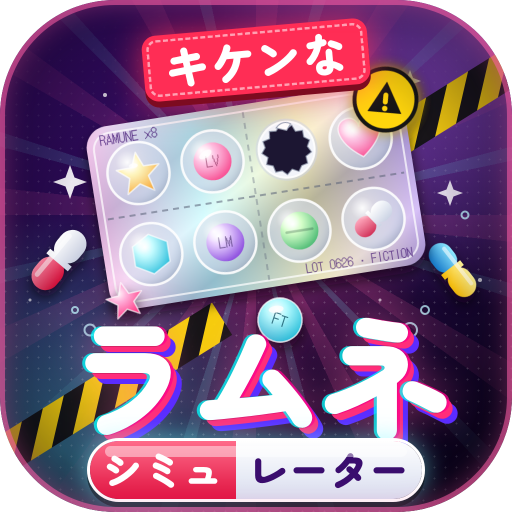

キケンなラムネシミュレーター
ダウンロード
📦 一式 zip
ソース・アイコン・ひとつで遊べるHTMLなど全部入り
🌐 サイト公開用 zip
Netlify などにそのまま上げられる（index.html が一番上）
📄 ひとつのHTMLだけ
ダウンロードしてブラウザで開くと遊べる（ネット接続が必要）
iPhone：リンクを押して「ダウンロード」→「ファイル」アプリの「ダウンロード」フォルダに保存されます。zipはタップすると解凍できます。
このゲームはフィクションです。登場するラムネ・お酒はすべて架空のものです。
▶ ブラウザで遊ぶ